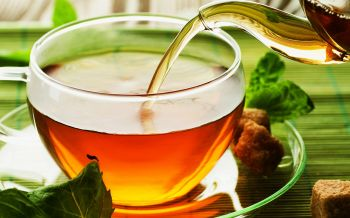

|

Чай (кит. 茶 — «ча» на пекинском и гуандунском диалекте, «те» на амойском и «тцай-е» на тайваньском) — напиток, получаемый варкой, завариванием и/или настаиванием листа чайного куста, который предварительно подготавливается специальным образом.
Чаем также называется сам лист чайного куста, обработанный и подготовленный для приготовления напитка. Подготовка эта включает предварительную сушку (вяление), скручивание, более или менее длительное ферментативное окисление, окончательную сушку. Прочие операции вводятся в процесс только для производства отдельных видов и сортов чая.
Иногда слово «чай» используют и в качестве названия чайного куста — вида растений рода Камелия семейства Чайные; в ботанической научной литературе для этого вида обычно используется название камелия китайская (Camellia sinensis).
Чаем в широком смысле может именоваться любой напиток, приготовленный путём заваривания предварительно подготовленного растительного материала. В названиях таких напитков к слову «чай», как правило, добавляется пояснение, характеризующее используемое сырьё («травяной чай», «ягодный чай», «фруктовый чай» и так далее).
Выращивание и сбор:
Сырьём для изготовления чая являются листья чайного куста, который выращивают в массовом количестве на специальных плантациях. Для произрастания этого растения необходим тёплый климат с достаточным количеством влаги, не застаивающейся у корней. Большинство чайных плантаций располагается на горных склонах в районах с тропическим или субтропическим климатом. В Китае, Индии и Африке, где производится наибольшая доля чая, сбор проводится до четырёх раз в год. Наиболее ценятся чаи первых двух урожаев. Северная граница территории, на которой выращивание чая экономически оправдано, проходит приблизительно на широте Грузии и Краснодарского края России. В более высоких широтах чайный куст ещё может произрастать, но культивировать его в целях заготовки чая убыточно.
Листья чая собираются и сортируются вручную: для чаёв наиболее высокой сортности (и стоимости) используются нераспустившиеся почки и самые молодые листья, лишь первая-вторая флешь (первая-вторая группа листьев на побеге, считая от конца); более «грубые» чаи делают из зрелых листьев. Труд сборщиков достаточно тяжёлый и монотонный: соотношение массы готового чёрного чая и сырого листа — около ¼, то есть на изготовление килограмма чая требуется собрать четыре килограмма листа. Норма выработки для сборщиков составляет 30—35 кг листа в день, при том, что необходимо соблюдать стандарты качества и брать с кустов только нужные листья. Сырьё для высокосортных чаёв часто растёт на небольших плантациях (площадью около 0,5 га), располагающихся разрозненно на горных склонах, так что к сборке листа добавляется необходимость перехода с одной плантации на другую. Современные промышленные плантации делают, как правило, достаточно крупными, чтобы обеспечить непрерывность сборки и поднять производительность, собранный на этих плантациях лист идёт на чай массового производства.
Необходимость ручной сборки ограничивает возможности культивирования чая: оно имеет смысл только в регионах с достаточно высокой продуктивностью и достаточно низкой стоимостью ручного труда сборщиков. Неоднократно делались попытки механизировать сборку и сортировку чайного листа, в частности, в СССР ещё в 1958 году был создан механизированный чаеуборочный агрегат, однако технология механизированной сборки до сих пор не доработана: собранный комбайнами лист имеет слишком низкое качество, главным образом за счёт большого количества посторонних включений (побеги, засохшие листья, посторонний мусор и так далее), так что используется он либо для производства самого низкосортного чая, либо в фармацевтической промышленности, для последующей переработки с целью выделения кофеина и других содержащихся в чае веществ.
Употребление:
Чайный напиток приготавливается преимущественно завариванием: сухой чай заливается горячей водой и настаивается в течение некоторого времени. Дозировка сухого чая, время настаивания и температура воды зависят от сорта чая и традиции. В большинстве традиций считается, что чем выше степень ферментации чая, тем более высокой должна быть температура воды. Зелёные, белые и жёлтые чаи (дающие, как правило, настой со слабо выраженным вкусом и ценящиеся, главным образом, за аромат) заваривают водой низкой температуры (60—85 °C), чёрные — крутым кипятком, температура заваривания улунов колеблется в зависимости от ферментации. Пуэры заваривают кипятком либо даже варят, подобно кофе: засыпают чай в холодную воду и доводят на огне почти до кипения. Количество сухого чая на одну порцию напитка колеблется приблизительно от 0,5 до 2,5 чайных ложек.
В любой традиции приготовление и употребление чая обычно включает в себя следующие шаги:
• общая подготовка к чаепитию,
• отмеривание и подготовка заварки,
• нагрев воды,
• подготовка посуды для заваривания,
• заваривание,
• разлив чая,
• собственно питьё чая.
Каждая более-менее обособленная чаепотребляющая географическая область или страна сформировала свои «чайные традиции», отличающиеся способом приготовления, обстоятельствами и порядком употребления чая. Традиции эти более или менее строго выдерживались в прошлом, в разной степени им следуют и в настоящее время.
|